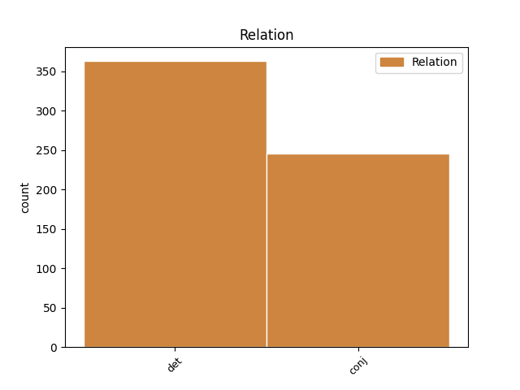
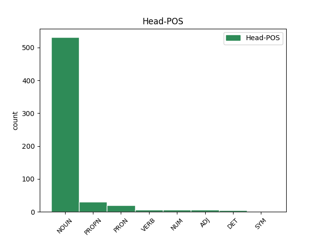
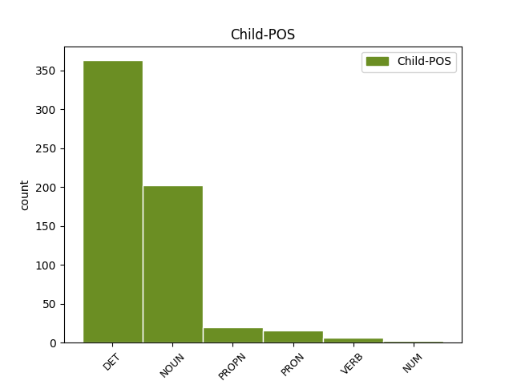

Distribution of features within this leaf



Agreement Rules sorted by frequency.
- When the dependent token is the determiner(det) of the head token, and the dependent token is DET.
1 Ja _ _ _ _ 0 _ _ _
2 muideks _ _ _ _ 0 _ _ _
3 see see DET P Case=Nom|Number=Sing|PronType=Dem 4 det _ _
4 krõbin krõbin NOUN S Case=Nom|Number=Sing 0 _ _ _
5 on _ _ _ _ 0 _ _ _
6 kohe _ _ _ _ 0 _ _ _
7 algusest _ _ _ _ 0 _ _ _
8 saati _ _ _ _ 0 _ _ _
9 mu _ _ _ _ 0 _ _ _
10 telefonil _ _ _ _ 0 _ _ _
11 olnud _ _ _ _ 0 _ _ _
12 , _ _ _ _ 0 _ _ _
13 peale _ _ _ _ 0 _ _ _
14 pakist _ _ _ _ 0 _ _ _
15 väljavõttu _ _ _ _ 0 _ _ _
16 panin _ _ _ _ 0 _ _ _
17 tähele _ _ _ _ 0 _ _ _
18 . _ _ _ _ 0 _ _ _
1 Krõbin _ _ _ _ 0 _ _ _
2 kül _ _ _ _ 0 _ _ _
3 ei _ _ _ _ 0 _ _ _
4 ole _ _ _ _ 0 _ _ _
5 normaalne _ _ _ _ 0 _ _ _
6 ... _ _ _ _ 0 _ _ _
7 kui _ _ _ _ 0 _ _ _
8 samsungi samsung PROPN S Case=Gen|Number=Sing 0 _ _ _
9 ja _ _ _ _ 0 _ _ _
10 ifööno ifööno NOUN S Case=Gen|Number=Sing 8 conj _ _
11 mehed _ _ _ _ 0 _ _ _
12 seda _ _ _ _ 0 _ _ _
13 normaalseks _ _ _ _ 0 _ _ _
14 peavad _ _ _ _ 0 _ _ _
15 siis _ _ _ _ 0 _ _ _
16 edu _ _ _ _ 0 _ _ _
17 teile _ _ _ _ 0 _ _ _
18 . _ _ _ _ 0 _ _ _
1 Muide _ _ _ _ 0 _ _ _
2 alles _ _ _ _ 0 _ _ _
3 ükspäev _ _ _ _ 0 _ _ _
4 lugesin _ _ _ _ 0 _ _ _
5 Türgis Türgi PROPN S Case=Ine|Number=Sing 0 _ _ _
6 , _ _ _ _ 0 _ _ _
7 Egipütuses Egiptus PROPN S Case=Ine|Number=Sing 5 conj _ _
8 jm _ _ _ _ 0 _ _ _
9 islamimaa _ _ _ _ 0 _ _ _
10 kronoloogilist _ _ _ _ 0 _ _ _
11 järjekorda _ _ _ _ 0 _ _ _
12 , _ _ _ _ 0 _ _ _
13 kus _ _ _ _ 0 _ _ _
14 olid _ _ _ _ 0 _ _ _
15 lausa _ _ _ _ 0 _ _ _
16 nimekirjad _ _ _ _ 0 _ _ _
17 . _ _ _ _ 0 _ _ _
1 1 _ _ _ _ 0 _ _ _
2 ei _ _ _ _ 0 _ _ _
3 ole _ _ _ _ 0 _ _ _
4 massiline _ _ _ _ 0 _ _ _
5 , _ _ _ _ 0 _ _ _
6 ja _ _ _ _ 0 _ _ _
7 võttes _ _ _ _ 0 _ _ _
8 konsentratsiooniks _ _ _ _ 0 _ _ _
9 see see PRON P Case=Nom|Number=Sing|PronType=Dem 0 _ _ _
10 siin _ _ _ _ 0 _ _ _
11 + _ _ _ _ 0 _ _ _
12 froniuse _ _ _ _ 0 _ _ _
13 oma oma PRON P Case=Nom|Number=Sing|Poss=Yes|PronType=Prs 9 conj _ _
14 siis _ _ _ _ 0 _ _ _
15 on _ _ _ _ 0 _ _ _
16 see _ _ _ _ 0 _ _ _
17 väga _ _ _ _ 0 _ _ _
18 väike _ _ _ _ 0 _ _ _
19 konsentratsioon _ _ _ _ 0 _ _ _
20 . _ _ _ _ 0 _ _ _
1 reps _ _ _ _ 0 _ _ _
2 kirjutas _ _ _ _ 0 _ _ _
3 : _ _ _ _ 0 _ _ _
4 A _ _ _ _ 0 _ _ _
5 miks _ _ _ _ 0 _ _ _
6 peab _ _ _ _ 0 _ _ _
7 telefoni _ _ _ _ 0 _ _ _
8 raputama raputama VERB V Case=Ill|VerbForm=Sup|Voice=Act 0 _ _ _
9 või _ _ _ _ 0 _ _ _
10 taguma taguma VERB V Case=Ill|VerbForm=Sup|Voice=Act 8 conj _ SpaceAfter=No
11 , _ _ _ _ 0 _ _ _
12 kas _ _ _ _ 0 _ _ _
13 see _ _ _ _ 0 _ _ _
14 on _ _ _ _ 0 _ _ _
15 sheiker _ _ _ _ 0 _ _ _
16 või _ _ _ _ 0 _ _ _
17 uks _ _ _ _ 0 _ _ _
18 millele _ _ _ _ 0 _ _ _
19 koputatakse _ _ _ _ 0 _ _ _
1 mina _ _ _ _ 0 _ _ _
2 suudan _ _ _ _ 0 _ _ _
3 aastas _ _ _ _ 0 _ _ _
4 vaid _ _ _ _ 0 _ _ _
5 kord kord NOUN S Case=Nom|Number=Sing 0 _ _ _
6 või _ _ _ _ 0 _ _ _
7 kaks kaks NUM N Case=Nom|Number=Sing|NumType=Card 5 conj _ _
8 pidada _ _ _ _ 0 _ _ _
9 paastu _ _ _ _ 0 _ _ _
10 . _ _ _ _ 0 _ _ _
Disagree Examples:
1 Pärnus _ _ _ _ 0 _ _ _
2 on _ _ _ _ 0 _ _ _
3 iga iga DET P Case=Gen|Number=Sing|PronType=Tot 4 det _ _
4 kinnistuga kinnistu NOUN S Case=Com|Number=Sing 0 _ _ _
5 nn _ _ _ _ 0 _ _ _
6 sundleping _ _ _ _ 0 _ _ _
7 , _ _ _ _ 0 _ _ _
8 vähemalt _ _ _ _ 0 _ _ _
9 nendega _ _ _ _ 0 _ _ _
10 , _ _ _ _ 0 _ _ _
11 kus _ _ _ _ 0 _ _ _
12 majake _ _ _ _ 0 _ _ _
13 peal _ _ _ _ 0 _ _ _
14 . _ _ _ _ 0 _ _ _
1 Minu _ _ _ _ 0 _ _ _
2 naabrinaisel naabri_naine NOUN S Case=Ade|Number=Sing 0 _ _ _
3 prygimäed _ _ _ _ 0 _ _ _
4 ymber _ _ _ _ 0 _ _ _
5 maja _ _ _ _ 0 _ _ _
6 ja _ _ _ _ 0 _ _ _
7 seda _ _ _ _ 0 _ _ _
8 linnas linn NOUN S Case=Ine|Number=Sing 2 conj _ SpaceAfter=No
9 , _ _ _ _ 0 _ _ _
10 ma _ _ _ _ 0 _ _ _
11 ei _ _ _ _ 0 _ _ _
12 ytle _ _ _ _ 0 _ _ _
13 mis _ _ _ _ 0 _ _ _
14 linnas _ _ _ _ 0 _ _ _
15 , _ _ _ _ 0 _ _ _
16 aga _ _ _ _ 0 _ _ _
17 rotihordid _ _ _ _ 0 _ _ _
18 ja _ _ _ _ 0 _ _ _
19 varesed _ _ _ _ 0 _ _ _
20 teevad _ _ _ _ 0 _ _ _
21 pesi _ _ _ _ 0 _ _ _
22 otse _ _ _ _ 0 _ _ _
23 öue _ _ _ _ 0 _ _ _
24 . _ _ _ _ 0 _ _ _
1 Või _ _ _ _ 0 _ _ _
2 on _ _ _ _ 0 _ _ _
3 see _ _ _ _ 0 _ _ _
4 pigem _ _ _ _ 0 _ _ _
5 igapäevane _ _ _ _ 0 _ _ _
6 - _ _ _ _ 0 _ _ _
7 „ _ _ _ _ 0 _ _ _
8 no _ _ _ _ 0 _ _ _
9 mis _ _ _ _ 0 _ _ _
10 me _ _ _ _ 0 _ _ _
11 täna _ _ _ _ 0 _ _ _
12 siis _ _ _ _ 0 _ _ _
13 süüa _ _ _ _ 0 _ _ _
14 teeme _ _ _ _ 0 _ _ _
15 peavalu _ _ _ _ 0 _ _ _
16 “ _ _ _ _ 0 _ _ _
17 - _ _ _ _ 0 _ _ _
18 mis _ _ _ _ 0 _ _ _
19 lõppeb _ _ _ _ 0 _ _ _
20 sageli _ _ _ _ 0 _ _ _
21 ebameeldiva _ _ _ _ 0 _ _ _
22 täiskõhutunde täis_kõhu_tunne NOUN S Case=Gen|Number=Sing 0 _ _ _
23 ja _ _ _ _ 0 _ _ _
24 nõudepesu _ _ _ _ 0 _ _ _
25 pohmelliga pohmell NOUN S Case=Com|Number=Sing 22 conj _ SpaceAfter=No
26 . _ _ _ _ 0 _ _ _
1 Küll _ _ _ _ 0 _ _ _
2 aga _ _ _ _ 0 _ _ _
3 jääb _ _ _ _ 0 _ _ _
4 igast _ _ _ _ 0 _ _ _
5 buumist _ _ _ _ 0 _ _ _
6 midagi _ _ _ _ 0 _ _ _
7 kasulikku _ _ _ _ 0 _ _ _
8 meie _ _ _ _ 0 _ _ _
9 toidukultuuri _ _ _ _ 0 _ _ _
10 , _ _ _ _ 0 _ _ _
11 nagu _ _ _ _ 0 _ _ _
12 novelle _ _ _ _ 0 _ _ _
13 cuisinest _ _ _ _ 0 _ _ _
14 jäid _ _ _ _ 0 _ _ _
15 head _ _ _ _ 0 _ _ _
16 tehnoloogid _ _ _ _ 0 _ _ _
17 , _ _ _ _ 0 _ _ _
18 uued _ _ _ _ 0 _ _ _
19 tekstuurid tekstuur NOUN S Case=Nom|Number=Plur 0 _ _ _
20 ja _ _ _ _ 0 _ _ _
21 palju _ _ _ _ 0 _ _ _
22 värskust värskus NOUN S Case=Par|Number=Sing 19 conj _ SpaceAfter=No
23 . _ _ _ _ 0 _ _ _
1 Igatahes _ _ _ _ 0 _ _ _
2 ei _ _ _ _ 0 _ _ _
3 soovi _ _ _ _ 0 _ _ _
4 ma _ _ _ _ 0 _ _ _
5 selle see DET P Case=Gen|Number=Sing|PronType=Dem 6 det _ _
6 jutuga jutt NOUN S Case=Com|Number=Sing 0 _ _ _
7 kedagi _ _ _ _ 0 _ _ _
8 halvustada _ _ _ _ 0 _ _ _
9 , _ _ _ _ 0 _ _ _
10 olen _ _ _ _ 0 _ _ _
11 ise _ _ _ _ 0 _ _ _
12 ka _ _ _ _ 0 _ _ _
13 samade _ _ _ _ 0 _ _ _
14 probleemidega _ _ _ _ 0 _ _ _
15 võidelnud _ _ _ _ 0 _ _ _
16 ja _ _ _ _ 0 _ _ _
17 võitlen _ _ _ _ 0 _ _ _
18 arvatavasti _ _ _ _ 0 _ _ _
19 veel _ _ _ _ 0 _ _ _
20 edasi _ _ _ _ 0 _ _ _
21 ... _ _ _ _ 0 _ _ _
22 ja _ _ _ _ 0 _ _ _
23 istak _ _ _ _ 0 _ _ _
24 on _ _ _ _ 0 _ _ _
25 mul _ _ _ _ 0 _ _ _
26 , _ _ _ _ 0 _ _ _
27 nagu _ _ _ _ 0 _ _ _
28 ka _ _ _ _ 0 _ _ _
29 paljudel _ _ _ _ 0 _ _ _
30 teistel _ _ _ _ 0 _ _ _
31 , _ _ _ _ 0 _ _ _
32 väga _ _ _ _ 0 _ _ _
33 jube _ _ _ _ 0 _ _ _